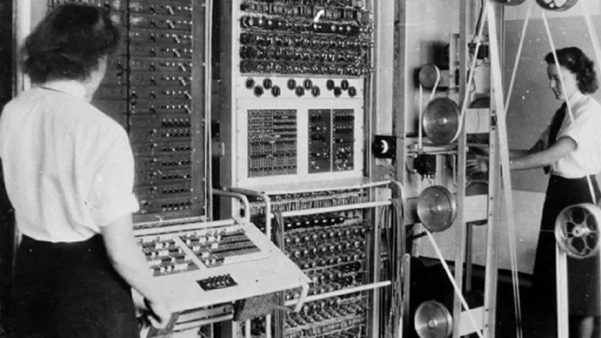

|  |
Historia da ProgramaçãoSéculo XIX Charles Babbage: Considerado o pai do computador, Babbage projetou as primeiras máquinas programáveis, como a Máquina Diferencial e a Máquina Analítica, que tinham a capacidade de realizar cálculos complexos. Início do século XX Válvulas termiônicas: O desenvolvimento das válvulas termiônicas permitiu a construção de circuitos eletrônicos e marcou o início da eletrônica digital. Alan Turing: Considerado o pai da ciência da computação, Turing desenvolveu a máquina de Turing, um modelo teórico de um computador capaz de resolver qualquer problema matemático computável. Segunda Guerra Mundial Colossus: O primeiro computador eletrônico digital foi construído na Grã-Bretanha durante a Segunda Guerra Mundial. O Colossus foi projetado para decifrar códigos utilizados pelas forças alemãs. ENIAC: O ENIAC, construído nos Estados Unidos, foi o primeiro computador eletrônico de grande escala, utilizado para cálculos balísticos. Décadas de 1950 e 1960 Transistores: A invenção do transistor em 1947 permitiu a construção de computadores menores, mais rápidos e mais confiáveis. IBM e mainframes: A IBM lançou o IBM 704, um dos primeiros mainframes comerciais, que impulsionou o uso de computadores em empresas e instituições governamentais. Décadas de 1970 e 1980 Microprocessadores: A criação do microprocessador pela Intel em 1971 possibilitou a fabricação de computadores pessoais menores e mais acessíveis. Apple e Microsoft: Empresas como Apple e Microsoft foram fundadas, lançando computadores pessoais populares, como o Apple II e o IBM PC, respectivamente. Décadas de 1990 e 2000 Internet: O desenvolvimento da World Wide Web e a popularização da internet levaram à revolução da comunicação e à disseminação global da informação. Computação em nuvem: Surgiu a ideia de utilizar servidores remotos para armazenar dados e executar aplicativos, permitindo maior flexibilidade e compartilhamento de recursos computacionais. Século XXI Dispositivos móveis: O avanço dos smartphones e tablets tornou a computação ainda mais acessível, possibilitando acesso à internet e a uma variedade de aplicões |